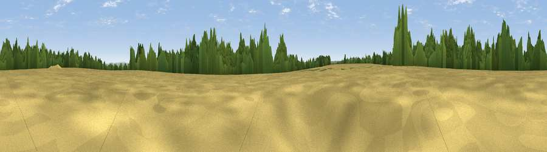

Viewpoint near Holybourne
#30619 in England · top 39% of its area beats it · near HolybourneWhere it is
The exact computed spot (SU 72675 43775). Click the marker for map links.
The view, rendered

A 360° render of this exact spot computed from the terrain model, tree cover and land cover — summer colours, afternoon light, calibrated against photographs of famous viewpoints. Real trees, hedges and buildings will differ in detail.
The panorama
Grey silhouette: terrain skyline in each direction (720 bearings, Earth curvature and refraction included). Dashed green: skyline with trees (+15 m) and buildings (+8 m) as obstacles. Blue strip: how far the ground is visible on each bearing.
Where the view opens
Wedge length = distance to the farthest visible ground on that bearing (vegetation-aware). Rings at 10, 25 and 50 km.
What fills the view
52% cropland · 27% woodland · 19% grassland · 2% built-up
Angular shares of the visible panorama (visual magnitude), not map area. Landscape diversity 0.48 (0–1 Shannon).
Key numbers
More beautiful places nearby
The staircase of upgrades: each row has a higher view potential than everything closer. Driving times are estimates from straight-line distance, calibrated against real road routing — check an actual route before setting out.
| Place | Direction | Drive | Score |
|---|---|---|---|
| Viewpoint near Holybourne | S · 1 km | ~4 min | 51.2 |
| Horsedown Common | NE · 6 km | ~12 min | 59.0 |
| Noar Hill | S · 12 km | ~23 min | 62.3 |
| Viewpoint near Steep | S · 17 km | ~29 min | 68.7 |
| Viewpoint near Buriton | S · 23 km | ~38 min | 75.3 |
| Viewpoint near Buriton | S · 23 km | ~39 min | 80.0 |
| Beacon Hill | SSE · 27 km | ~43 min | 85.8 |
| Chanctonbury Ring | SE · 52 km | ~73 min | 87.0 |
51.18859, -0.96147 · source: screening · position refined by local search. Computed location — check access rights before visiting.